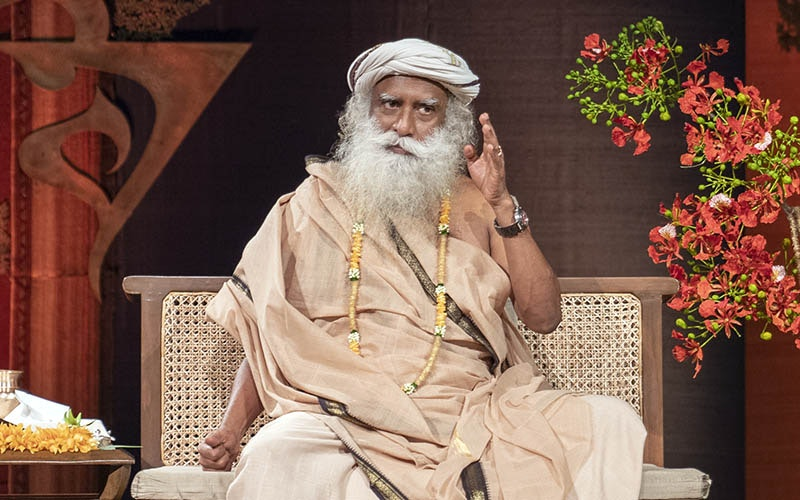
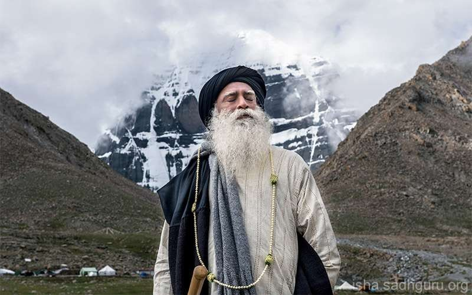
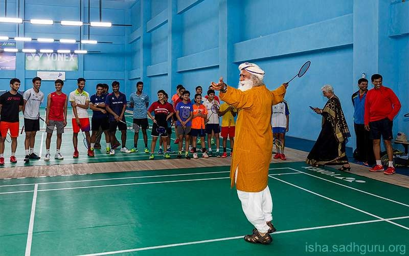
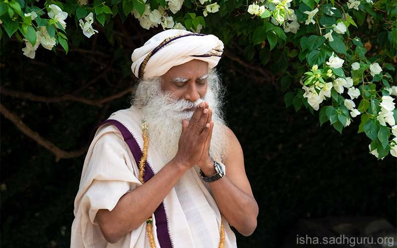
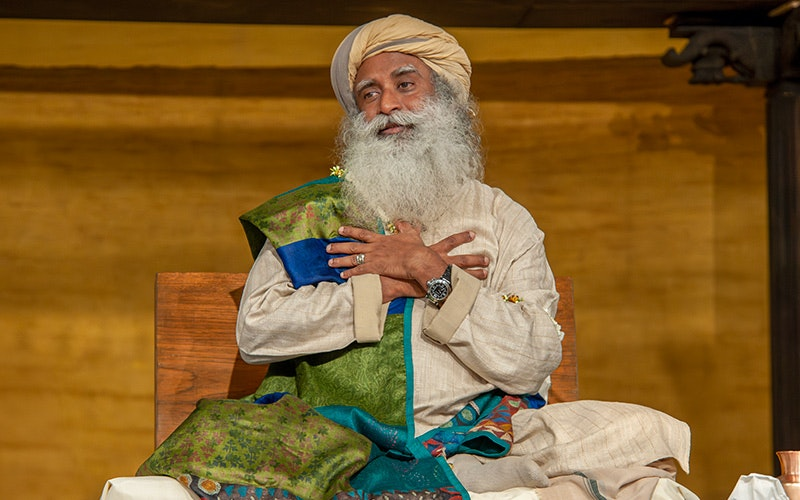
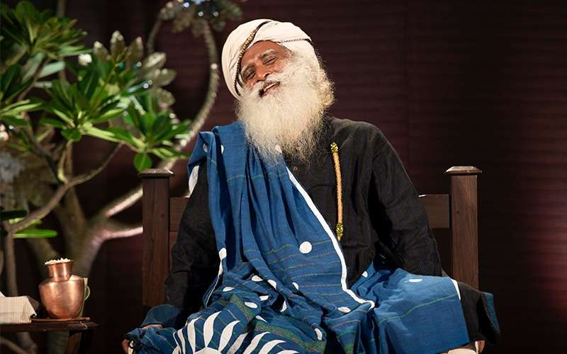
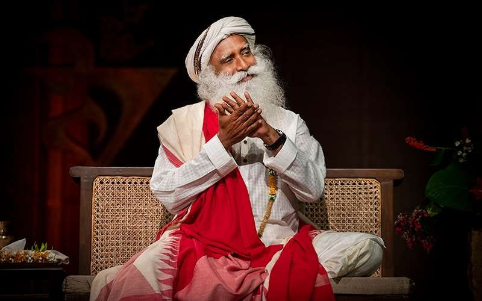
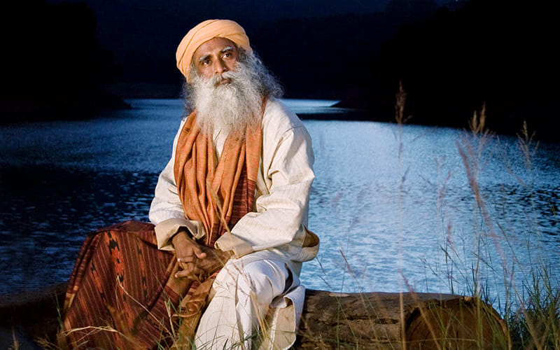
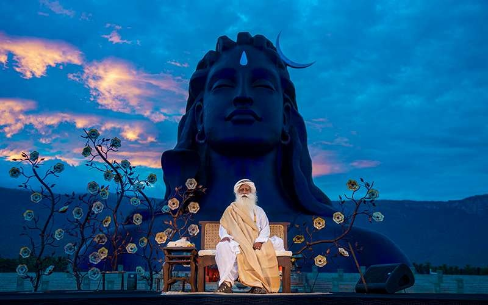

VS 2083 has a thirteenth month — adhika māsa (★ Adhika Jyeshtha). In the pūrṇimānta system each month runs full moon → full moon: waning krishna १→ (○ अमावस्या), then waxing shukla १→१५ (● पूर्णिमा, month-end). Devanagari = tithi; small = Gregorian date.
| # | Month | Gregorian | Season |
|---|---|---|---|
| 01 | चैत्र Chaitra | 4 Mar – 2 Apr 26 | Vasanta |
| 02 | वैशाख Vaishākha | 3 Apr – 2 May 26 | Vasanta |
| 03 | अधिक ज्येष्ठ Adhika Jyeshtha ★ | 3 May – 31 May 26 | Grīshma |
| 04 | ज्येष्ठ Jyeshtha | 1 Jun – 29 Jun 26 | Grīshma |
| 05 | आषाढ Āshādha | 30 Jun – 29 Jul 26 | Varshā |
| 06 | श्रावण Shrāvana | 30 Jul – 27 Aug 26 | Varshā |
| 07 | भाद्रपद Bhādrapada | 28 Aug – 25 Sep 26 | Sharad |
| 08 | आश्विन Āshwina | 26 Sep – 25 Oct 26 | Sharad |
| 09 | कार्तिक Kārtika | 26 Oct – 23 Nov 26 | Hemanta |
| 10 | मार्गशीर्ष Mārgashīrsha | 24 Nov – 23 Dec 26 | Hemanta |
| 11 | पौष Pausha | 24 Dec – 22 Jan 27 | Shishira |
| 12 | माघ Māgha | 23 Jan – 21 Feb 27 | Shishira |
| 13 | फाल्गुन Phālguna | 22 Feb – 23 Mar 27 | Shishira |

| र | सो | मं | बु | गु | शु | श |
|---|---|---|---|---|---|---|
1 Mar | 2 Mar | 3 Mar | १4 Mar कृ॰ प्रतिपदा | २5 Mar | ३6 Mar | ४7 Mar |
५8 Mar | ६9 Mar | ७10 Mar | ८11 Mar | ९12 Mar | १०13 Mar | ११14 Mar |
१२15 Mar | १३16 Mar | १४17 Mar | १५18 Mar ○ अमावस्या | १19 Mar शु॰ प्रतिपदाGudi Padwa · Ugadi | २20 Mar | ३21 Mar |
४22 Mar | ५23 Mar | ६24 Mar | ७25 Mar | ८26 Mar | ९27 Mar Rāma Navamī | १०28 Mar |
११29 Mar | १२30 Mar | १३31 Mar | १४1 Apr | १५2 Apr ● पूर्णिमाHanumān Jayantī | 3 Apr | 4 Apr |

| र | सो | मं | बु | गु | शु | श |
|---|---|---|---|---|---|---|
29 Mar | 30 Mar | 31 Mar | 1 Apr | 2 Apr | १3 Apr कृ॰ प्रतिपदा | २4 Apr |
३5 Apr | ४6 Apr | ५7 Apr | ६8 Apr | ७9 Apr | ८10 Apr | ९11 Apr |
१०12 Apr | ११13 Apr | १२14 Apr | १३15 Apr | १४16 Apr | १५17 Apr ○ अमावस्या | १18 Apr शु॰ प्रतिपदा |
२19 Apr | ३20 Apr Akshaya Tritīyā | ४21 Apr | ५22 Apr | ६23 Apr | ७24 Apr | ८25 Apr |
९26 Apr | १०27 Apr | ११28 Apr | १२29 Apr | १३30 Apr | १४1 May | १५2 May ● पूर्णिमाBuddha Pūrṇimā |
| र | सो | मं | बु | गु | शु | श |
|---|---|---|---|---|---|---|
१3 May कृ॰ प्रतिपदा | २4 May | ३5 May | ४6 May | ५7 May | ६8 May | ७9 May |
८10 May | ९11 May | १०12 May | ११13 May | १२14 May | १३15 May | १४16 May ○ अमावस्या |
१17 May शु॰ प्रतिपदा | २18 May | ३19 May | ४20 May | ५21 May | ६22 May | ७23 May |
८24 May | ९25 May | १०26 May | ११27 May | १२28 May | १३29 May | १४30 May |
१५31 May ● पूर्णिमा | 1 Jun | 2 Jun | 3 Jun | 4 Jun | 5 Jun | 6 Jun |

| र | सो | मं | बु | गु | शु | श |
|---|---|---|---|---|---|---|
31 May | १1 Jun कृ॰ प्रतिपदा | २2 Jun | ३3 Jun | ४4 Jun | ५5 Jun | ६6 Jun |
७7 Jun | ८8 Jun | ९9 Jun | १०10 Jun | ११11 Jun | १२12 Jun | १३13 Jun |
१४14 Jun ○ अमावस्या | १15 Jun शु॰ प्रतिपदा | २16 Jun | ३17 Jun | ४18 Jun | ५19 Jun | ६20 Jun |
७21 Jun | ८22 Jun | ९23 Jun | १०24 Jun Gangā Dussehra | ११25 Jun Nirjalā Ekādashī | १२26 Jun | १३27 Jun |
१४28 Jun | १५29 Jun ● पूर्णिमाVat Pūrṇimā | 30 Jun | 1 Jul | 2 Jul | 3 Jul | 4 Jul |

| र | सो | मं | बु | गु | शु | श |
|---|---|---|---|---|---|---|
28 Jun | 29 Jun | १30 Jun कृ॰ प्रतिपदा | २1 Jul | ३2 Jul | ४3 Jul | ५4 Jul |
६5 Jul | ७6 Jul | ८7 Jul | ९8 Jul | १०9 Jul | ११10 Jul | १२11 Jul |
१३12 Jul | १४13 Jul | १५14 Jul ○ अमावस्या | १15 Jul शु॰ प्रतिपदा | २16 Jul Rath Yātrā | ३17 Jul | ४18 Jul |
५19 Jul | ६20 Jul | ७21 Jul | ८22 Jul | ९23 Jul | १०24 Jul | ११25 Jul Devshayanī Ekādashī |
१२26 Jul | १३27 Jul | १४28 Jul | १५29 Jul ● पूर्णिमाGuru Pūrṇimā | 30 Jul | 31 Jul | 1 Aug |

| र | सो | मं | बु | गु | शु | श |
|---|---|---|---|---|---|---|
26 Jul | 27 Jul | 28 Jul | 29 Jul | १30 Jul कृ॰ प्रतिपदा | २31 Jul | ३1 Aug |
४2 Aug | ५3 Aug | ६4 Aug | ७5 Aug | ८6 Aug | ९7 Aug | १०8 Aug |
११9 Aug | १२10 Aug | १३11 Aug | १४12 Aug ○ अमावस्या | १13 Aug शु॰ प्रतिपदा | २14 Aug | ३15 Aug |
४16 Aug | ५17 Aug Nāg Panchamī | ६18 Aug | ७19 Aug | ८20 Aug | ९21 Aug | १०22 Aug |
११23 Aug | १२24 Aug | १३25 Aug | १४26 Aug | १५27 Aug ● पूर्णिमाRakshā Bandhan | 28 Aug | 29 Aug |

| र | सो | मं | बु | गु | शु | श |
|---|---|---|---|---|---|---|
23 Aug | 24 Aug | 25 Aug | 26 Aug | 27 Aug | १28 Aug कृ॰ प्रतिपदा | २29 Aug |
३30 Aug | ४31 Aug | ५1 Sep | ६2 Sep | ७3 Sep | ८4 Sep Janmāshtamī | ९5 Sep |
१०6 Sep | ११7 Sep | १२8 Sep | १३9 Sep | १४10 Sep ○ अमावस्या | १11 Sep शु॰ प्रतिपदा | २12 Sep |
३13 Sep | ४14 Sep Gaṇesha Chaturthī | ५15 Sep | ६16 Sep | ७17 Sep | ८18 Sep | ९19 Sep |
१०20 Sep | ११21 Sep | १२22 Sep | १३23 Sep | १४24 Sep Anant Chaturdashī | १५25 Sep ● पूर्णिमा | 26 Sep |

| र | सो | मं | बु | गु | शु | श |
|---|---|---|---|---|---|---|
20 Sep | 21 Sep | 22 Sep | 23 Sep | 24 Sep | 25 Sep | १26 Sep कृ॰ प्रतिपदाPitru Paksha begins |
२27 Sep | ३28 Sep | ४29 Sep | ५30 Sep | ६1 Oct | ७2 Oct | ८3 Oct |
९4 Oct | १०5 Oct | ११6 Oct | १२7 Oct | १३8 Oct | १४9 Oct | १५10 Oct ○ अमावस्या |
१11 Oct शु॰ प्रतिपदाSharad Navrātri | २12 Oct | ३13 Oct | ४14 Oct | ५15 Oct | ६16 Oct | ७17 Oct |
८18 Oct | ९19 Oct | १०20 Oct Dussehra | ११21 Oct | १२22 Oct | १३23 Oct | १४24 Oct |
१५25 Oct ● पूर्णिमाSharad Pūrṇimā | 26 Oct | 27 Oct | 28 Oct | 29 Oct | 30 Oct | 31 Oct |
| र | सो | मं | बु | गु | शु | श |
|---|---|---|---|---|---|---|
25 Oct | १26 Oct कृ॰ प्रतिपदा | २27 Oct | ३28 Oct | ४29 Oct | ५30 Oct | ६31 Oct |
७1 Nov | ८2 Nov | ९3 Nov | १०4 Nov | ११5 Nov | १२6 Nov | १३7 Nov Dhanteras |
१४8 Nov ○ अमावस्याDIWALI | १9 Nov शु॰ प्रतिपदाGovardhan Pūjā | २10 Nov Bhai Dooj | ३11 Nov | ४12 Nov | ५13 Nov | ६14 Nov |
७15 Nov | ८16 Nov | ९17 Nov | १०18 Nov | ११19 Nov Dev Uthanī Ekādashī | १२20 Nov | १३21 Nov |
१४22 Nov | १५23 Nov ● पूर्णिमाKārtik Pūrṇimā | 24 Nov | 25 Nov | 26 Nov | 27 Nov | 28 Nov |
| र | सो | मं | बु | गु | शु | श |
|---|---|---|---|---|---|---|
22 Nov | 23 Nov | १24 Nov कृ॰ प्रतिपदा | २25 Nov | ३26 Nov | ४27 Nov | ५28 Nov |
६29 Nov | ७30 Nov | ८1 Dec | ९2 Dec | १०3 Dec | ११4 Dec | १२5 Dec |
१३6 Dec | १४7 Dec | १५8 Dec ○ अमावस्या | १9 Dec शु॰ प्रतिपदा | २10 Dec | ३11 Dec | ४12 Dec |
५13 Dec | ६14 Dec | ७15 Dec | ८16 Dec | ९17 Dec | १०18 Dec | ११19 Dec Gītā Jayantī |
१२20 Dec | १३21 Dec | १४22 Dec | १५23 Dec ● पूर्णिमाDattātreya Jayantī | 24 Dec | 25 Dec | 26 Dec |
| र | सो | मं | बु | गु | शु | श |
|---|---|---|---|---|---|---|
20 Dec | 21 Dec | 22 Dec | 23 Dec | १24 Dec कृ॰ प्रतिपदा | २25 Dec | ३26 Dec |
४27 Dec | ५28 Dec | ६29 Dec | ७30 Dec | ८31 Dec | ९1 Jan'27 | १०2 Jan |
११3 Jan | १२4 Jan | १३5 Jan | १४6 Jan | १५7 Jan ○ अमावस्या | १8 Jan शु॰ प्रतिपदा | २9 Jan |
३10 Jan | ४11 Jan | ५12 Jan | ६13 Jan | ७14 Jan Makar Sankrānti | ८15 Jan | ९16 Jan |
१०17 Jan | ११18 Jan | १२19 Jan | १३20 Jan | १४21 Jan | १५22 Jan ● पूर्णिमाPausha Pūrṇimā | 23 Jan |

| र | सो | मं | बु | गु | शु | श |
|---|---|---|---|---|---|---|
17 Jan | 18 Jan | 19 Jan | 20 Jan | 21 Jan | 22 Jan | १23 Jan कृ॰ प्रतिपदा |
२24 Jan | ३25 Jan | ४26 Jan | ५27 Jan | ६28 Jan | ७29 Jan | ८30 Jan |
९31 Jan | १०1 Feb | ११2 Feb | १२3 Feb | १३4 Feb | १४5 Feb | १५6 Feb ○ अमावस्या |
१7 Feb शु॰ प्रतिपदा | २8 Feb | ३9 Feb | ४10 Feb | ५11 Feb Vasant Panchamī | ६12 Feb | ७13 Feb |
८14 Feb | ९15 Feb | १०16 Feb | ११17 Feb | १२18 Feb | १३19 Feb | १४20 Feb |
१५21 Feb ● पूर्णिमाMāghī Pūrṇimā | 22 Feb | 23 Feb | 24 Feb | 25 Feb | 26 Feb | 27 Feb |

| र | सो | मं | बु | गु | शु | श |
|---|---|---|---|---|---|---|
21 Feb | १22 Feb कृ॰ प्रतिपदा | २23 Feb | ३24 Feb | ४25 Feb | ५26 Feb | ६27 Feb |
७28 Feb | ८1 Mar | ९2 Mar | १०3 Mar | ११4 Mar | १२5 Mar | १३6 Mar |
१४7 Mar Mahā Shivarātri | १५8 Mar ○ अमावस्या | १9 Mar शु॰ प्रतिपदा | २10 Mar | ३11 Mar | ४12 Mar | ५13 Mar |
६14 Mar | ७15 Mar | ८16 Mar | ९17 Mar | १०18 Mar | ११19 Mar | १२20 Mar |
१३21 Mar | १४22 Mar Holikā Dahan | १५23 Mar ● पूर्णिमाHOLI | 24 Mar | 25 Mar | 26 Mar | 27 Mar |